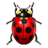
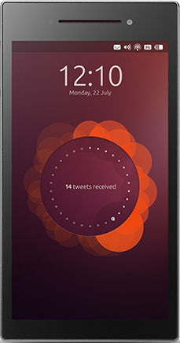

Ubuntu Touch
Dieser Artikel bezieht sich auf Ubuntu Touch, die Variante von Ubuntu für mobile Geräte mit Touchscreen.
Dieser Artikel gilt für alle Versionen von Ubuntu Touch.
 Ubuntu Touch ist eine Variante von Ubuntu für Android-basierte, mobile Geräte mit Touchscreens (Smartphones, Tablets) und stellt eine Alternative zu den beiden marktbeherrschenden Systemen Android und iOS dar.
Ubuntu Touch ist eine Variante von Ubuntu für Android-basierte, mobile Geräte mit Touchscreens (Smartphones, Tablets) und stellt eine Alternative zu den beiden marktbeherrschenden Systemen Android und iOS dar.
Die hinter Ubuntu stehende Firma Canonical  startete 2013 eine Crowdfunding-Kampagne , um das erste Smartphone mit Ubuntu als Betriebssystem zu finanzieren: das Ubuntu Edge. Das gesteckte Ziel von 32 Millionen US-Dollar konnte zwar nicht erreicht werden, aber die Suche nach Geräteherstellern wurde durch diese Kampagne erleichtert.
startete 2013 eine Crowdfunding-Kampagne , um das erste Smartphone mit Ubuntu als Betriebssystem zu finanzieren: das Ubuntu Edge. Das gesteckte Ziel von 32 Millionen US-Dollar konnte zwar nicht erreicht werden, aber die Suche nach Geräteherstellern wurde durch diese Kampagne erleichtert.
Die Strategie von Ubuntu Touch beinhaltet einen "Convergence-Modus". Das Ziel ist, eine einheitliche, aber dynamische Benutzeroberfläche von Ubuntu für mobile Ubuntu Touch-Geräte als auch für klassische Desktop-Anwendungsfälle (PC) zur Verfügung zu stellen. Ubuntu Touch-Apps passen sich dabei dynamisch der Bildschirmgröße an. Anfang 2016 wurde das Aquaris M10 Ubuntu Edition Tablet vorgestellt, das diese Funktion erstmals umsetzt (Video).
UBports¶
Im April 2017 wurde von Mark Shuttleworth bekannt gegeben, dass der ambitionierte Ansatz von Ubuntu Touch mangels kommerziellem Erfolg gescheitert ist und eingestellt wird (Quelle ).
Das zuvor auf die Portierung von Ubuntu Touch auf neue Geräte fokussierte Projekt Ubports gab kurz darauf bekannt, Ubuntu Touch weiterentwickeln zu wollen. Seitdem wächst die UBports-Gemeinschaft beständig und eine ganze Reihe von Sponsoren konnten gewonnen werden. Die Gründung einer deutschen Stiftung als offizieller Träger ist in Arbeit. Bis zur endgültigen Einrichtung aller benötigten Dienste und Server, stellt Canonical weiterhin die eigenen Server zur Verfügung.
Für das Jahr 2018 ist die Veröffentlichung einer neuen Ubuntu Touch-Version auf Basis von Ubuntu 16.04 geplant, um eine LTS-Version als Code-Basis nutzen zu können. Besitzer der offiziellen, vorinstallierten Geräte sollten auf UBports Ubuntu Touch-Version wechseln. Bei Geräten, welche aufgrund alter geschlossener Treiber nicht von neuen Ubuntu Touch-Versionen profitieren werden, plant Ubports zumindest weiterhin Sicherheitsaktualisierungen bereitzustellen. Welche Geräte dies betrifft, ist im Abschnitt Legacy Devices ersichtlich.
Geräte¶
UBports unterstützt Stand 2017 offiziell diese Geräte:
Fairphone 2
Nexus 5
OnePlus One
BQ Aquaris M10 FHD
Weitere Geräte sind in den Gruppen Vorveröffentlichung, Legacy (nur Sicherheitsaktualisierungen garantiert) oder Entwicklung zu finden. Als Voraussetzung für die offizielle Unterstützung eines Gerätes durch UBports, muss das Gerät bereits offiziell von LineageOS unterstützt werden, weil damit u.a. der Android Tree bekannt ist. Grundsätzlich werden bisher nur auf Android basierende Geräte unterstützt. Eine wichtige Rolle spielt dabei Halium , welches eine Zwischenschicht für mobile Linuxsysteme bereitstellt.
Convergence¶
Programmierer von Apps werden durch die Entwicklungsumgebung in diesem eben erwähnten Prozess der dynamischen Zwischenzustände unterstützt. Aber auch klassische Programme, die sogenannten Legacy Apps, werden unterstützt, sind aber auf Touchscreens schwerer zu bedienen, vor allem auf kleinen. Während Ubuntu Touch-Apps auf den Desktop (PC) geholt werden können, indem man bei dies unterstützenden speziellen Ubuntu Touch-Geräten eine Tastatur, Maus und einen Bildschirm anschließt, können so auch klassische Programme vom Desktop ausgeführt und auch nach Abziehen von Tastatur, Maus und Bildschirm weiter benutzt werden, ohne sie neu starten zu müssen.
Klassische Legacy Apps haben ihre Stärken bei Funktionsumfang, sehr gut unterstützten Dateiformaten und ihrer langjährigen Entwicklung. Sie sind aber weniger für Touchscreens geeignet, es sei denn, sie werden als neue Ubuntu Touch-App darauf optimiert, wie das z.B. bei den Spielen Tux Racer oder Neverball der Fall ist. Dort wurde jeweils zusätzlich der Lagesensor zur Steuerung integriert.
Ubuntu Touch-Apps haben ihre Stärke darin, sowohl auf einem kleinen Touchscreen als auch einem großen Monitor mit Tastatur- und Maus-Bedienung eine gute Bedienbarkeit zu gewährleisten. Dafür können sie eine Dynamik nutzen, welche auf kleineren Bildschirmen oder klein gezogenen Fenstern nur die wesentlichsten Informationen darstellen. Meist haben sie einen geringeren Funktionsumfang als Legacy Apps.
Unterartikel¶
Nachfolgend ist eine Übersicht aller Artikel aufgeführt, die sich mit Ubuntu Touch befassen. Diese sollen dabei einen Einblick in die Bedienung, Installation und die Konfiguration geben. Durch Anklicken des jeweiligen  Begriffs gelangt man zum gewünschten Artikel.
Begriffs gelangt man zum gewünschten Artikel.
| Artikelserie zu Ubuntu Touch | |
Installation | Installation des Betriebssystems auf unterstützten Geräten. |
 Bedienung | Einrichtung des Systems vornehmen und Grundlagen zur Bedienung. |
 Programme | Programm-Empfehlungen und Spiele. |
 Systemeingriff | Tieferer Eingriff ins System für erweiterte Konfigurationsmöglichkeiten. |
Backup | Datenverlust durch Datensicherung verhindern. |
 Terminal | Das Terminal unter Ubuntu Touch verwenden. |
 Erste Hilfe | Erste Hilfe bei Problemen. |
|  Probleme | Verbesserungswünsche und Probleme melden. Geplante Lösungen kommender Rolling-Release-Aktualisierungen nachsehen. |
Tipps | Kniffe, die den Umgang mit dem Betriebssystem erleichtern. |
Geschichte | Informationen über die bisherigen Releases und erschienenen Geräten. |
Testen | Erste Schritte mit dem Emulator wagen. |
Alles im Blick | Alle Artikel des Wikis und Howtos zum Thema Ubuntu Touch. |
Links¶

Intern¶
Ubuntu Phone Launch Insider Event in London am 6. Februar 2015
Interview mit Cristian Parrino über Ubuntu Phone und dessen zukünftigen Pläne vom 11. Februar 2015
Canonical CEO Jane Silber über Ubuntu Phone vom 13. Februar 2015
Ubuntu Phone: Das bq Aquaris E4.5 näher angeschaut vom 25. Februar 2015
Extern¶
All questions about Ubuntu Phone
- Blogbeitrag, 02/2016Fragen und Antworten zu Ubuntu Phone
 - Blogbeitrag, 02/2015
- Blogbeitrag, 02/2015UbuntuOnAir
- Ubuntu Community Q&A beantwortet Fragen in Videokonferenzen; Workshops für Entwickler und vieles mehrubuntuonair.com
- Informationen zu kommenden Aktionen
Debian auf Handys und Tablets
- Debianforum: Vergleich mit anderen Linuxsystemen sowie technische Dokumentation zur nachhaltigen und angepassten Nutzung von UT (selbst kompilieren durch die Community)

- Erstellt mit Inyoka
-
 2004 – 2017 ubuntuusers.de • Einige Rechte vorbehalten
2004 – 2017 ubuntuusers.de • Einige Rechte vorbehalten
Lizenz • Kontakt • Datenschutz • Impressum • Serverstatus -
Serverhousing gespendet von